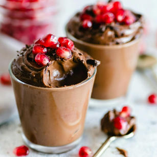
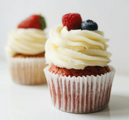
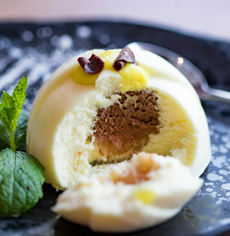
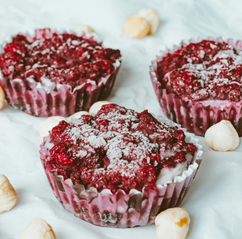
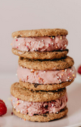
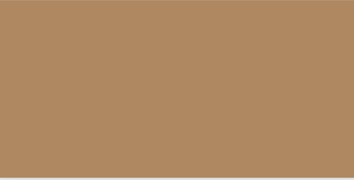
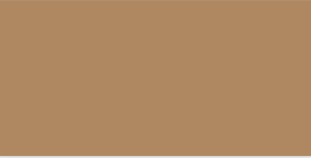

What Makes Our Website Different From Others?





Sweet Treats
Our website may seem like another, ordinary recipe website, however, ours is unique! What sets our company apart is that our baked goods each have their own, lighthearted character with its added charisma! This means that most, if not all, our creations are painted on with decadent chocolate, creating friendly smiles! Not only that our baked good smile but it will put a smile on the faces of others, those you share your treats with!
 

Wholesomely Made
Not only does our website fuel creativity, but it is also a great way to begin a new hobby of baking. Our baked goods will inspire you to create other desert options! This is to improve your baking technique and skills! Not only that, but our website isn’t even all just for the sole purpose of baking! If you are seeking inspiration for a new clay charm to make, or create an adorable painting, or more, our baked goods can help you! These goods can be recreated in any way, shape, or form so feel free to create whatever is the most convenient for you! So feel free to browse through our recipes and find a charming, edible creation to recreate, share, and consume!